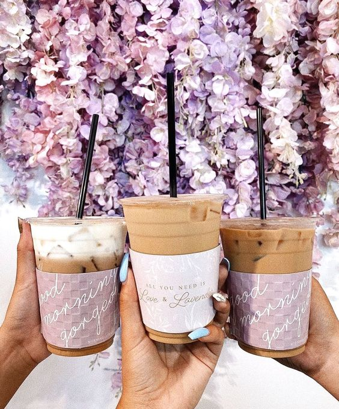

Welcome to Lavender Cafe
Our café features a cozy interior inspired by nature and the comfort of home. Every element of our décor is carefully thought out to create an atmosphere of warmth and tranquility. We prepare our dishes with love and care, using only the freshest and highest quality ingredients. Our menu is diverse and caters to every taste, from classic dishes to unique culinary creations. Additionally, we offer a wide selection of beverages, ranging from aromatic coffee to exquisite cocktails. We strive to make your visit to "Lavender Mood" café unforgettable. Our friendly staff is always ready to provide you with attentive service and assist you in choosing dishes and drinks. Come and enjoy the warmth and comfort of "Lavender Mood" café! We look forward to welcoming you Our café features a cozy interior inspired by nature and the comfort of home. Every element of our décor is carefully thought out to create an atmosphere of warmth and tranquility. We prepare our dishes with love and care, using only the freshest and highest quality ingredients. Our menu is diverse and caters to every taste, from classic dishes to unique culinary creations. Additionally, we offer a wide selection of beverages, ranging from aromatic coffee to exquisite cocktails. We strive to make your visit to "Lavender Mood" café unforgettable. Our friendly staff is always ready to provide you with attentive service and assist you in choosing dishes and drinks. Come and enjoy the warmth and comfort of "Lavender Mood" café! We look forward to welcoming you Our café features a cozy interior inspired by nature and the comfort of home. Every element of our décor is carefully thought out to create an atmosphere of warmth and tranquility. We prepare our dishes with love and care, using only the freshest and highest quality ingredients. Our menu is diverse and caters to every taste, from classic dishes to unique culinary creations. Additionally, we offer a wide selection of beverages, ranging from aromatic coffee to exquisite cocktails. We strive to make your visit to "Lavender Mood" café unforgettable. Our friendly staff is always ready to provide you with attentive service and assist you in choosing dishes and drinks. Come and enjoy the warmth and comfort of "Lavender Mood" café! We look forward to welcoming you